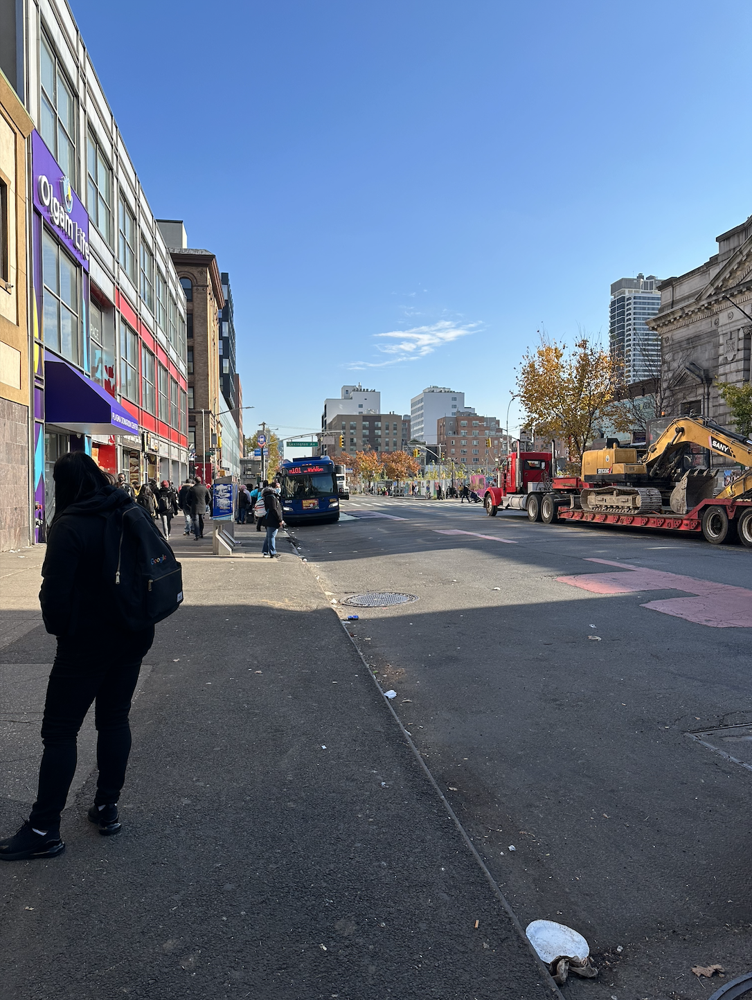

NYPD launches ambitious operation to clean up drug-ridden New York neighborhood
The NYPD launched a new method called "Operation four corners" in October to clean an area of East Harlem full of dealers and drug addicts that neighbors have nicknamed it to “Zombieland.”
“There are a lot of people on drugs, I think this is the worst place in Manhattan (…). “I was in danger every day I came to work here,” says Mariela Salazar, 52, a cleaning worker.
In the so-called Operation Four Corners, to be carried out between 125th Street and Lexington Avenue in East Harlem... there are drug dealers selling on every corner and drugged people on the streets. Many people who work in the area and live in East Harlem feel unsafe walking around and do not believe it is a safe area for school children and people who work there.
East Harlem has 14% of New York City's drug treatment programs, although it represents 1.4% of the city's population. Most of these services are located on 125th Street, where there are also medication needle exchange programs and the Mount Sinai Drug Treatment Program with 1,850 patients (5% of New York City capacity).
The New York police plan an information campaign to inform residents of the new changes that are taking place in the area. It is not yet known with certainty how long the operation will last or extend.